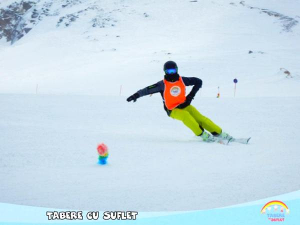

/ Tabere Schi si Snowboard / Scoala de Schi & Snowboard
/ Tabere Schi si Snowboard / Scoala de Schi & Snowboard

Doriti sa descoperiti minunata lume a alunecarii pe zapada si sa va initiati in doua dintre cele mai frumoase sporturi, insa sunteti cazati in alta parte si nu doriti sa participati la programul unei tabere? Sau va place competitia si doriti sa va antrenati in porti si sa faceti performanta in aceste sporturi? In acest caz va propunem mai multe pachete, prin Scoala de Schi si Snowboard Tabere cu Suflet:
Info: Programul Discovery este destinat celor care vor sa se initieze / perfectioneze in sporturile de alunecare pe zapada, timp de o saptamana, pe timpul Taberelor de Schi / Snowboard, fara sa participa la tabara insa.
Program: Un monitor va lucra cu Dvs timp de 5 zile (20 ore), in grupe de 4 - 10 persoane. Copiii sub 6 ani vor invata prin metoda fara plug.
Contributie: Contributia pentru acest program este de 300 Euro / pers.
Promotii: Se acorda reduceri de 8%-12% pentru Early Booking.
Info: Programul Day by Day este destinat celor care vor sa se initieze / perfectioneze in sporturile de alunecare pe zapada, pe parcusul unei zile.
Program: Un monitor va lucra cu Dvs timp de o zi (4 ore), in grupe de minim 4 persoane.
Contributie: Contributia pentru acest program este de 100 Euro / pers / zi.
Promotii: Se acorda reduceri de 8%-12% pentru Early Booking.
Info: Programul Exclusiv este destinat celor care vor sa se initieze / perfectioneze in sporturile de alunecare pe zapada si sa lucreze individual.
Program: Un monitor va lucra cu Dvs. in mod individual, durata programului si locul ales fiind stabilite de comun acord. Recomandam un numar minim de ore.
Contributie: Contributia pentru acest program este de 50 Euro / pers / h.
Promotii: Se acorda reduceri de 8%-12% pentru Early Booking.
Info: Pentru cei care vor sa se initieze / perfectioneze in sporturile de alunecare pe zapada in cadrul programului Weekend Activ Mai multe detalii
Program: Un monitor va lucra cu Dvs timp de o zi intreaga (4 - 6 ore), la o iesire de weekend, in grupe de 2 - 6 persoane.
Contributie: Contributia pentru acest program este de 30 - 50 Euro / pers / zi, functie de fiecare iesire in parte.
Pentru programul iesirilor si mai multe detalii, va rugam sa intrati pe pagina programului.
Info: Programul de Performanta este destinat celor care vor sa se perfectioneze in schi / snowboard si implica un anumit nivel necesar pentru a putea participa.
Program: Un monitor va lucra cu Dvs timp de o zi (4 ore) in grupe de minim 3 persoane. Antrenamentele presupun o parte teoretica, o parte de exercitii pe partie si un antrenament specific in porti de slalom / slalom urias.
Contributie: Contributia pentru acest program este de 120 Euro / pers / zi.
Promotii: Se acorda reduceri de 80% pentru membrii Clubului Tabere cu Suflet
Info: Programul Freeride este destinat celor care iubesc powderul si vor sa se perfectioneze in schi pe vai alpine si in afara partiei.
Program: Un monitor va lucra cu Dvs timp de o zi (2 - 6 h).
Contributie: Contributia pentru acest program este de 120 Euro / pers / zi.
Promotii: Se acorda reduceri de 8%-12% pentru Early Booking.
Info: Programul de Schi Indoor este destinat celor care vor sa se initieze in schi intr-o sala indoor.
Program: Programul este suspendat momentan. Mai multe detalii